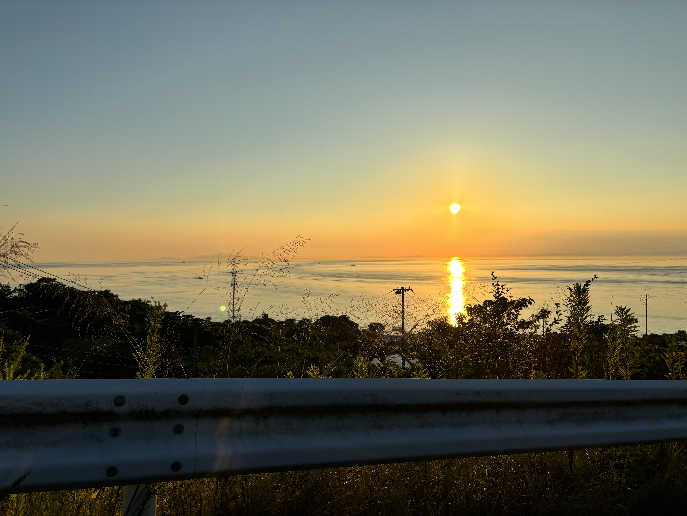
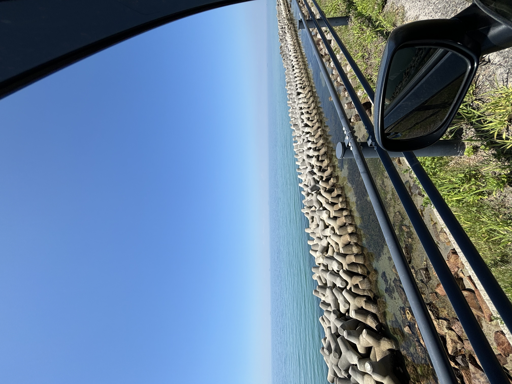

| Welcome to Mahiro web site! | ||
| HOME | PORTFOLIO | TRIVIA | ||
| Useful Links |
Content
Last summer, I went on a road trip to Awaji Island with my friends. It was one of the best trips I’ve ever had, and I would like to recommend this place to anyone who wants to enjoy a relaxing summer drive. First, the sea around Awaji Island is very beautiful. We found a quiet beach and swam in the clear blue water. It was not too crowded, so we could enjoy the ocean freely. Next, we ate delicious local food. I really liked the Awaji Burger, which was made with sweet onions grown on the island. We also tried fresh seafood like grilled fish and sashimi. Because the island is surrounded by the sea, everything was very fresh. In the evening, we went to a hot spring. The best part was the outdoor bath, where we watched the sunset while soaking in the warm water. The sky slowly turned orange and pink—it was an unforgettable moment. Driving gave us the freedom to explore many places on the island. I would love to visit Awaji Island again this summer.   |
Contact Me |
| July 2025 I can't show my SNS sorry. Thank you for visiting! | ||